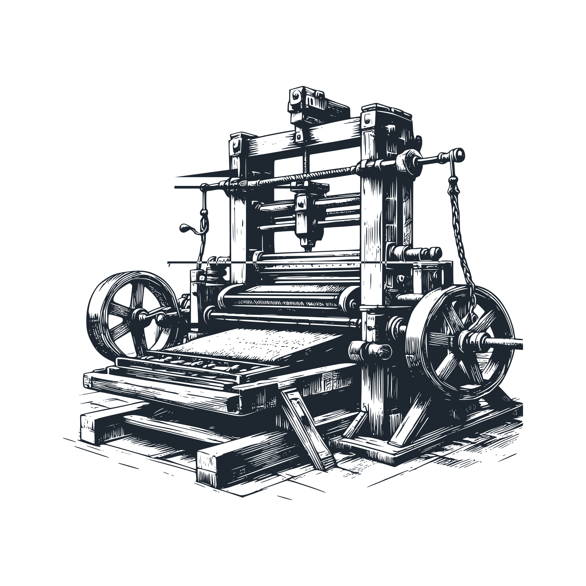

The Evolution of Copyright Law: From Quill to Code
Introduction
My previous post introduced the complexities of AI when we consider copyright law. Grasping the challenges posed by AI and Large Language Models (LLMs) will benefit from reviewing how copyright law has evolved because of technology in the past.
The fundamental goal of copyright law is to balance the rights of authors against the social benefits of enabling others to create new works that can draw upon previous work. This creates an intriguing evolving dance as technological innovation changes the very concept of "what is possible," often in ways that earlier authors, copyright owners, legislators, and courts simply could not have envisioned.
[Image suggestion: A timeline graphic showing key technological innovations and corresponding copyright developments. This could start with the printing press and end with AI/LLMs.]
The Birth of Copyright
The evolution of copyright law is tends to lag technological innovation. Indeed, it took 234 years from the introduction of the printing press to England (1476) to the creation (1710) of the concept of an exclusive right of ownership for the creator of a written creation (the Statute of Anne.) This replaced the previous system, in which the printers had a monopoly on publications. Thus, the Statute of Anne shifted from a system in which the printers' rights were essential to one where the authors' rights were fundamental.
Copyright Adaptations from Technological Changes
Printing Press

The invention of the printing press (Johannes Gutenberg, circa 1450) laid the foundation for the very need for copyright protection: the ability to mass-produce identical copies of written works also created the question of who should control and benefit from the published works: the author or the publisher.
Photography and Visual Arts
In the 19th century the invention of photography required the evolution of copyright, in this case to determine if a photograph represented an original work deserving of copyright protection or merely the capture of information, and thus not a creative work. In the U.S., this issue was addressed in 1884 when the U.S. Supreme Court rules that photographs deserved copyright protection, which extended the concept of copyright beyond written works (Burrows-Giles Lithographic Company v. Sarony.)
Sound Recordings and Phonographs
The ability to capture sound recordings appeared in the late 19th century and saw substantial evolution into the 20th century. While copyright had previously applied to the written musical score, the ability to capture a specific recording of it led to the inclusion of such recordings as another example of artistic creation protected by copyright.
Radio Broadcasting
The pace of technological innovation continued at a torrid pace, with the introduction of radio broadcasts in the 1920s. Once again, this new technology raised a fundamental copyright question: is a live presentation, available to many people simultaneously, deserving of copyright protection? To answer this, Copyright law was extended to include the concept of performance rights, as well as licensing systems for such broadcast media.
Thus, Artificial Intelligence (AI) and Large Language Models (LLMs) are merely the most recent technological innovation that raises questions of copyright. As we continue through this historical journey, I will explore how each new technology forced us to reconsider copyright principles, reinforcing this observation that AII and LLMs are just the latest challenge.
Film and Motion Picture
The emergence of cinema in the late 19th and early 20th centuries introduced new complexities to copyright law. Films, as collaborative works involving multiple creative inputs (screenplay, direction, performance, music), required a more nuanced approach to authorship and ownership.
f reproduction offered by new technologies and the rights of copyright holders, a tension that would only increase with the advent of digital technologies.
Photocopying
The widespread adoption of photocopying machines in the 1960s and 1970s made it easy for individuals to reproduce copyrighted materials. This technology sparked debates about fair use, especially in educational and research contexts.
This concept of fair use had been developing in common law for over a century and became increasingly important with the ability to easily use excerpts and reproductions of existing works. The "fair use" doctrine permits limited use of copyrighted material without acquiring permission from the rights holders. It is designed to balance the interests of copyright holders with the public interest in the wider distribution and use of creative works.
Key factors considered in determining fair use include:
- The purpose and character of the use (including whether it's commercial or for nonprofit educational purposes)
- The nature of the copyrighted work
- The amount and substantiality of the portion used in relation to the copyrighted work as a whole
- The effect of the use upon the potential market for or value of the copyrighted work
In the context of photocopying, fair use allowed for limited copying for purposes such as criticism, comment, news reporting, teaching, scholarship, or research. However, widespread photocopying for educational purposes led to significant legal debates. The landmark case of Basic Books, Inc. v. Kinko's Graphics Corp. addressed the issue of copy shops creating "course packs" for university students, ultimately ruling that such large-scale copying did not constitute fair use. Given the use of existing works as "training data" for Large Language Models (LLMs) this is useful in considering arguments about fair use for training AIs, rather than students.
Digital Age: Computers, the Internet, and File Sharing
The digital revolution of the late 20th century presented unprecedented challenges to copyright law. The ability to create perfect digital copies and share them globally via the internet led to new forms of piracy and copyright infringement.
E-Books and Digital Distribution
The rise of e-books and digital distribution platforms has transformed how we consume written content, raising questions about digital rights management and the first sale doctrine in the digital realm.
International Copyright Agreements
The ability to send publications between countries is certainly not a new one - England banned competing publications prior to the Statute of Anne (1710). However, the increase in commerce between countries, greater travel and exchange of cultural and intellectual creations, and a desire for ever more content created a need for international cooperation. Key international agreements that provide for similar understanding of copyright internatioanly include:
- 1886 - the Berne Convention. This international agreement requires signatories to recognize the copyrights of authors from other countries on an equal footing with native authors, without requiring any additional registration.
- 1952 - the Universal Copyright Convention. This agreement, adopted in 1952, is an international copyright treaty administered by UNESCO that provides a system of copyright protection for all signatory countries, offering an alternative to the Berne Convention with less demanding requirements, particularly for developing countries and nations that were not part of the Berne Convention at the time.
- 1994 - the TRIPS Agreement. The Agreement on Trade-Related Aspects of Intellectual Property Rights (TRIPS), negotiated in 1994 as part of the Uruguay Round of the General Agreement on Tariffs and Trade (GATT), is an international legal agreement between all member nations of the World Trade Organization (WTO) that sets down minimum standards for many forms of intellectual property regulation, including copyright, as applied to nationals of other WTO members.
- 1996 - the WIPO Copyright Treaty. The WIPO Copyright Treaty (WCT), adopted in 1996 and entered into force in 2002, is a special agreement under the Berne Convention that extends copyright protection to the digital environment, addressing computer programs and databases as literary works and establishing authors' rights to control the distribution, rental, and communication of their works to the public on the internet or other digital networks.
Key Legal Developments
- Fair Use Doctrine. As mentioned earlier, the concept of "fair use" was introduced to permit limited use of copyrighted works in a way that was conducive to the goals of encouraging creation of new work as well. Fair use is a doctrine in United States copyright law that permits limited use of copyrighted material without requiring permission from the rights holders, typically for purposes such as criticism, comment, news reporting, teaching, scholarship, or research, and is determined on a case-by-case basis by considering four factors: the purpose and character of the use, the nature of the copyrighted work, the amount and substantiality of the portion used, and the effect of the use upon the potential market for or value of the copyrighted work. While the term "fair use" is what the United States uses, many other countries have a similar concept described using different precise terms (e.g., "fair dealing" in Commonwealth countries or "exceptions and limitations" such as is used in the EU). The Berne convention also describes exceptions to copyright under the "three-step test."
- Digital Millennium Copyright Act (DMCA)
- Notable Court Cases. Copyright law and how it applies evolves through legal proceedings as well, with notable cases like Sony Corp. of America v Universal City Studios, Inc., which relates to home video recording, and Authors Guild v Google, Inc., which relates to digital library projects. The Authors Guild case certainly seems similar to the use of copyright works in training LLMs, in that it is also transformative, though the specific details likely require additional analysis.
Current Challenges: AI and LLMs
Today, we face a new frontier in copyright law with the advent of AI and LLMs. These technologies can generate human-like text, images, and computer code, challenging our traditional notions of authorship and originality.
The Future of Copyright
As we look to the future, copyright law must evolve to address AI-generated content, balancing the need to protect human creativity with the potential of AI to enhance and amplify creative processes.
Conclusion
The history of copyright law has been profoundly affected by technological changes: from printing press to AI, we address the evolving needs and challenges these new technologies pose. The history of legal evolution against the backdrop of technological innovation continues to guide us towards finding ways of encouraging the core interests in encouraging the creation of new work by rewarding those that create those works, while allowing that work to further drive even more creative endeavors.
In my next post, I will delve deeper into the specific copyright issues that arise when considering AI and LLMs. Having an understanding of this history (and the goals of copyright) I will build on this historical foundation and explore possible ways of further evolving against the backdrop of AI and LLMs.